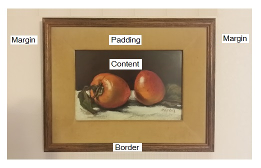

Margins, borders and padding are the frames that surround the pictures and paragraphs on a website, otherwise content. Now you can’t see them all the time and each is a little unique. So I’ll attempt to use a little portrait to illustrate this example. Before we go on, let’s first understand what each one is.
Margins, borders and padding typically make up a “box model.” The purpose of this box model is help arrange space around other pictures or paragraphs.
So let’s begin with the first term.
Margin – This is the clear area around the picture frame. If you were to hang a picture next to your home window, you would probably want to put some space between the frame of your picture and the frame of the window. If you measured this distance in inches, would you be able to touch those inches? No. It’s the invisible space to separate your portrait and the window.
Border – This is that beautiful wood finish around the edges. Some are gold, some are wood, some are black, some frames look terrible. They can be thick or thin. It goes around the padding in your picture.
Padding – This is the space that extra space to separate the picture from the border. Some pictures don’t have padding some do. Regardless, it’s the area around your picture.
Content – Then you have the picture itself. In all its beauty, it could be a photograph, a painting, digital art, or just words.
